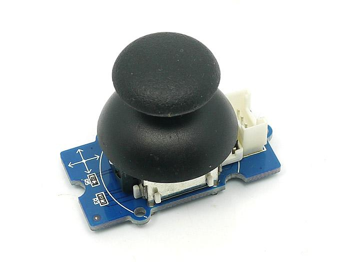
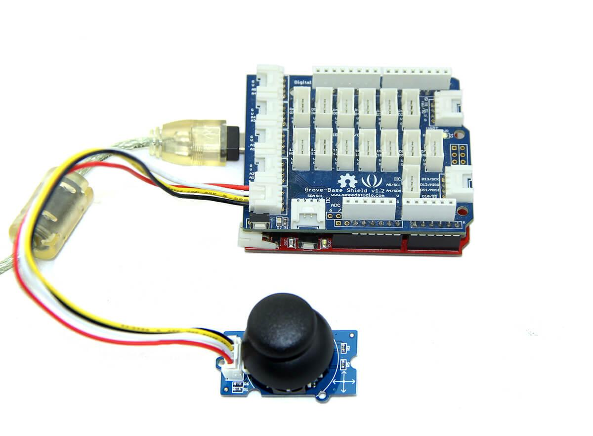
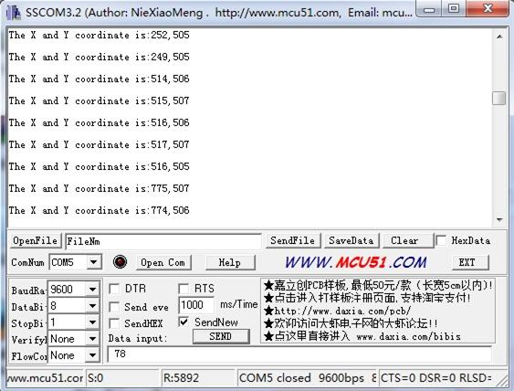

Grove - Thumb Joystick is a Grove compatible module which is very similar to the 'analog' joystick on PS2 (PlayStation 2) controllers. The X and Y axes are two ~10k potentiometers which control 2D movement by generating analog signals.
The joystick also has a push button that could be used for special applications. When the module is in working mode, it will output two analog values, representing two directions. Compared to a normal joystick, its output values are restricted to a smaller range (i.e. 200~800), only when being pressed that the X value will be set to 1023 and the MCU can detect the action of pressing.
Model: COM90133P

| Item | Min | Typical | Max | Unit |
|---|---|---|---|---|
| Working Voltage | 4.75 | 5.0 | 5.25 | V |
| Output Analog Value （X coordinate） | 206 | 516 | 798 | \ |
| Output Analog Value （Y coordinate） | 203 | 507 | 797 | \ |
The Grove - Thumb Joystick is an analog device that outputs analog signal ranging from 0 to 1023. That requires us to use the analog port of Arduino to take the readings.
1. Connect the module to the A0/A1 of Grove - Basic Shield using the 4-pin grove cable.
2. Plug the Grove - Basic Shield into Arduino.
3. Connect Arduino to PC by using a USB cable.

4. Copy and paste code below to a new Arduino sketch. Please click here if you do not know how to upload.
/*
Thumb Joystick demo v1.0
by:http://www.seeedstudio.com
connect the module to A0&A1 for using;
*/
void setup() {
Serial.begin(9600);
}
void loop() {
int sensorValue1 = analogRead(A0);
int sensorValue2 = analogRead(A1);
Serial.print("The X and Y coordinate is:");
Serial.print(sensorValue1, DEC);
Serial.print(",");
Serial.println(sensorValue2, DEC);
Serial.println(" ");
delay(200);
}
5. You can check the values of the output analog signals by opening the Serial Monitor.

The output value from the analog port of Arduino can be converted to the corresponding resistance using the formula:R=(float)(1023-sensorValue)*10/sensorValue.
1.You should have got a raspberry pi and a grovepi or grovepi+.
2.You should have completed configuring the development enviroment, otherwise follow here.
3.Connection
4.Navigate to the demos' directory:
cd yourpath/GrovePi/Software/Python/
nano grove_thumb_joystick.py # "Ctrl+x" to exit #
import time
import grovepi
# Connect the Grove Thumb Joystick to analog port A0
# GrovePi Port A0 uses Arduino pins 0 and 1
# GrovePi Port A1 uses Arduino pins 1 and 2
# Don't plug anything into port A1 that uses pin 1
# Most Grove sensors only use 3 of their 4 pins, which is why the GrovePi shares Arduino pins between adjacent ports
# If the sensor has a pin definition SIG,NC,VCC,GND, the second (white) pin is not connected to anything
# If you wish to connect two joysticks, use ports A0 and A2 (skip A1)
# Uses two pins - one for the X axis and one for the Y axis
# This configuration means you are using port A0
xPin = 0
yPin = 1
grovepi.pinMode(xPin,"INPUT")
grovepi.pinMode(yPin,"INPUT")
# The Grove Thumb Joystick is an analog device that outputs analog signal ranging from 0 to 1023
# The X and Y axes are two ~10k potentiometers and a momentary push button which shorts the x axis
# My joystick produces slightly different results to the specifications found on the url above
# I've listed both here:
# Specifications
# Min Typ Max Click
# X 206 516 798 1023
# Y 203 507 797
# My Joystick
# Min Typ Max Click
# X 253 513 766 1020-1023
# Y 250 505 769
while True:
try:
# Get X/Y coordinates
x = grovepi.analogRead(xPin)
y = grovepi.analogRead(yPin)
# Calculate X/Y resistance
Rx = (float)(1023 - x) * 10 / x
Ry = (float)(1023 - y) * 10 / y
# Was a click detected on the X axis?
click = 1 if x >= 1020 else 0
print "x =", x, " y =", y, " Rx =", Rx, " Ry =", Ry, " click =", click
time.sleep(.5)
except IOError:
print "Error"
5.Run the demo.
sudo python grove_thumb_joystick.py
Grove-Thumb Joystick Eagle File
Analog Joystick Datasheet
{kind=link}